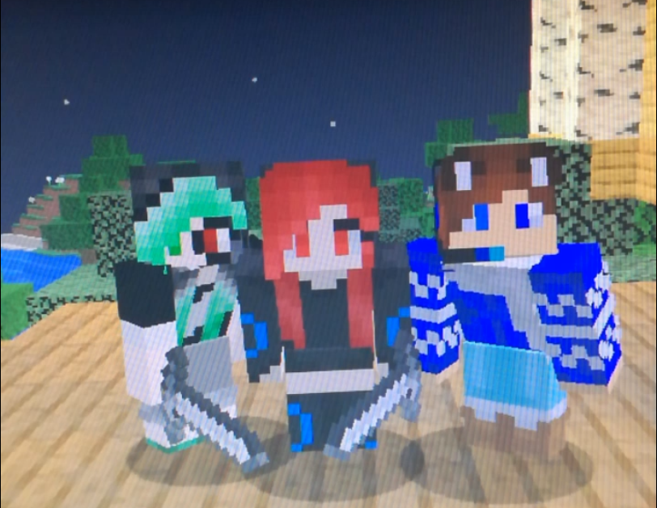
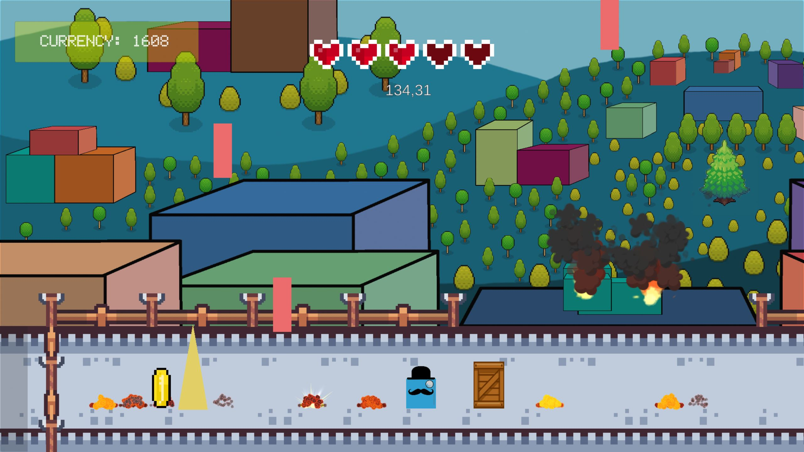
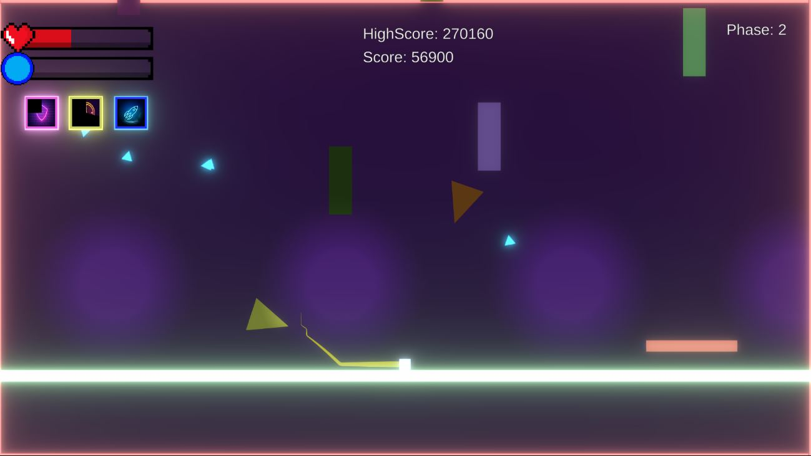
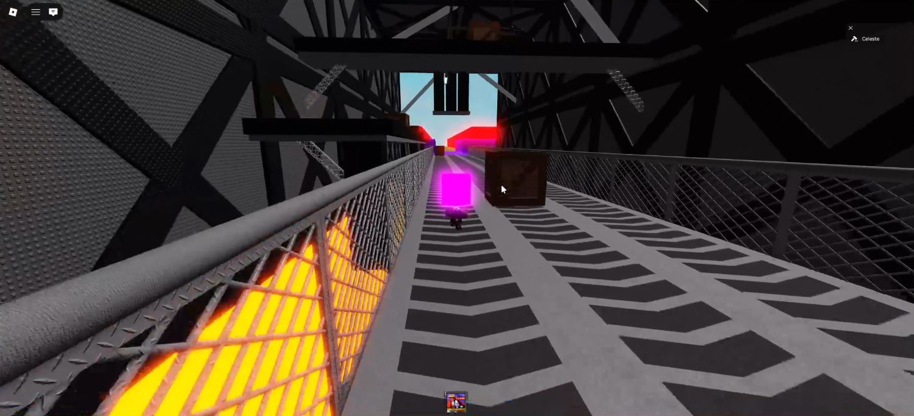

Angehender Fachinformatiker für Anwendungsentwicklung.
Ich entwickle eigene Projekte in Unity und Roblox und nutze Programmiersprachen wie C#, Java und lua.
About Me
Hallo! Ich bin Calvin, 25 Jahre alt und komme aus Hamburg.
Seit meiner Kindheit interessiere ich mich fürs Programmieren. Erste Erfahrungen sammelte ich während meiner Realschule in einer Roboter-AG. Später wechselte ich auf eine Fachoberschule für Technik mit dem Schwerpunkt Elektrotechnik.
Neben der Softwareentwicklung begeistern mich Videospiele sehr, weshalb ich nach der Schule ein Studium im Bereich Game Design begonnen habe. Ich habe eigene Projekte entwickelt und mich mit Unity (C#) und Roblox (Lua) vertraut gemacht.
Heute liegt mein Fokus auf der Softwareentwicklung und dem Ziel, eine Ausbildung als Fachinformatiker für Anwendungsentwicklung zu absolvieren, da ich während meiner Studienlaufzeit merkte, dass das mein größter Traum ist, was ich erreichen möchte.


Intruders from Above
- 2D-Survival-Spiel
- Engine: Unity
- Programmiersprache: C#
- Dauer: 2 Monate
Intruders from Above ist ein 2D-Survival-Spiel, bei dem du versuchen musst, eine Alien-Invasion zu überleben, indem du durch Portale springst, um am Ende in deine Basis zu gelangen.
Der Spieler muss dabei versuchen, in jedem Level eine bestimmte Zeit zu überleben, bevor ein Portal erscheint, durch das der Spieler dann reinlaufen kann.
Es war ein Hobbyprojekt, das ich entwickelt habe, bevor ich meinen Lehrgang als Game Designer an der Universität begonnen habe.
Für mich lag der Fokus in diesem Projekt darin, einen Gameplay-Loop zu entwickeln und mich mit der Programmiersprache C# vertraut zu machen. Im Laufe der Entwicklung kamen jedoch immer neue Ideen hinzu, weshalb sich die Entwicklungszeit stetig verlängert hat. Dadurch lernte ich neue Methoden kennen, um effizienter zu programmieren.
Glitchside
- Fast-paced 2D-Survival-Spiel
- Engine: Unity
- Programmiersprache: C#
- Dauer: 3 Tage
Glitchside ist ein fast-paced 2D-Survival-Spiel, bei dem du versuchen musst, so lange wie möglich zu überleben. Es ist eine abgewandelte Version meines Spiels "Intruders from Above".
Das Projekt entstand als Demonstration für einen privaten Kurs, den ich geleitet habe, um zu zeigen, wie sich mit Unity ein einfaches 2D-Spiel entwickeln lässt. Der Schwerpunkt lag dabei auf dem Player Movement.
Da das Spiel auf "Intruders from Above" basiert, konnte ich einen großen Teil des Codes übernehmen und weiter verfeinern. Mein persönliches Ziel war es diesmal, den Fokus auf die User-Experience zu legen, insbesondere darauf, wie sich die Steuerung des Charakters anfühlt.


Survive Obby for Lucky Block
- Obby, Progression
- Engine: Roblox Studio
- Programmiersprache: Lua
- Status: Aktive Entwicklung
Survive Obby for Lucky Block ist ein Obby-Spiel mit Progression-Elementen, bei dem der Spieler versucht, Lucky Blocks zu sammeln, um Geld zu verdienen.
Dabei fängt der Spieler mit einem langsamen Tempo an und versucht, so weit wie möglich zu kommen. Je weiter der Spieler kommt, ohne zu sterben, desto bessere Lucky Blocks erhält er. In diesen Lucky Blocks befinden sich Tiere, die je nach Seltenheit unterschiedlich viel Geld generieren. Mit dem verdienten Geld kann sich der Spieler im Shop stärken und seine Geschwindigkeit erhöhen.
Das Spiel orientiert sich an einem in Roblox erfolgreichen Progressionskonzept. Dabei kombiniere ich dieses bewährte Spielkonzept mit meinen eigenen Mechaniken und Ideen, um den Spielern ein neues Spielerlebnis zu bieten.